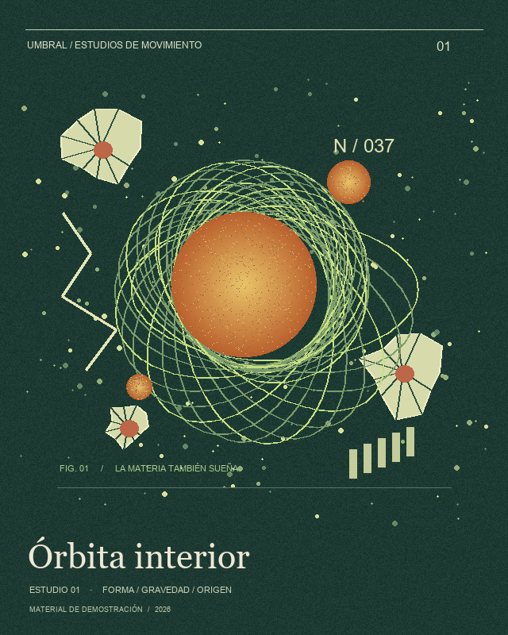
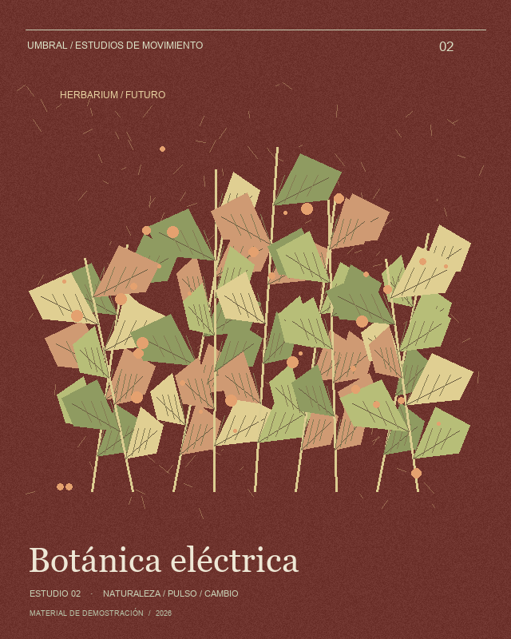
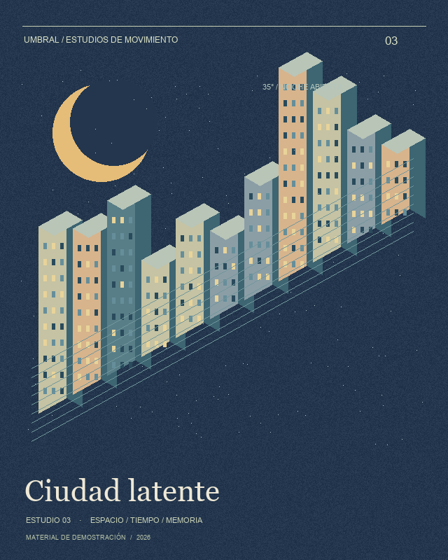

01 · Órbita interior / DEMO

UMBRAL · MATERIAL DE DEMOSTRACIÓN
Referencias temporales de demostración. Imprime en color, sin recortar y sobre papel mate. Abre el escáner en otro dispositivo mediante HTTPS.
Para imprimir, usa Ctrl+P. También puedes mostrar estas imágenes completas en otra pantalla.

UMBRAL · MATERIAL DE DEMOSTRACIÓN

UMBRAL · MATERIAL DE DEMOSTRACIÓN

UMBRAL · MATERIAL DE DEMOSTRACIÓN